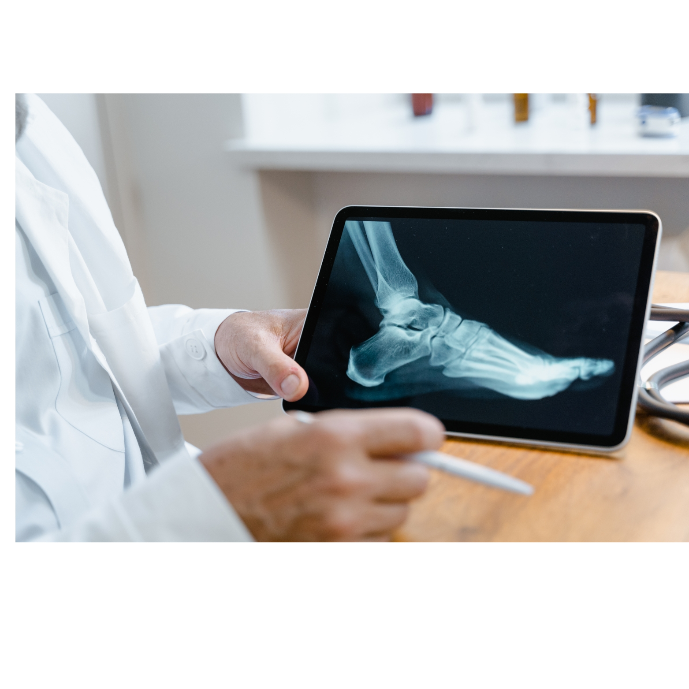

Quem somos
A rapha Open Health acredita que o acesso à saúde é um direito de todos e trabalha para reduzir as desigualdades regionais. Com soluções inovadoras, nossa plataforma apoia pacientes, profissionais e instituições na construção de um sistema de saúde mais acessível e inclusivo. Alinhada aos Objetivos de Desenvolvimento Sustentável da ONU, a rapha Open Health contribui para um futuro em que todos têm acesso a cuidados de saúde contínuos e de qualidade, fortalecendo comunidades e promovendo a equidade.
-
A Plataforma
A rapha Open Health é uma plataforma completa que permite o gerenciamento e o compartilhamento seguro de dados de saúde. Através de um Registro Eletrônico de Saúde (RES) integrado, profissionais de saúde acessam históricos completos dos pacientes, facilitando diagnósticos e promovendo a continuidade do cuidado. Outras funcionalidades incluem telemedicina, prescrição digital e monitoramento remoto de pacientes crônicos, garantindo um cuidado contínuo e acessível.
web & app -
Benefícios para
Na rapha Open Health, você é o protagonista do seu cuidado de saúde. Tenha controle total do seu histórico médico, insira aferições e dados de atividades, e compartilhe essas informações com segurança com os profissionais de saúde da sua escolha. Nosso objetivo é promover o autocuidado e facilitar o acesso a um cuidado de saúde contínuo, seguro e acessível, seja em casa, na clínica ou no hospital.
Pacientes -

Benefícios para
A rapha Open Health é uma ferramenta essencial para os profissionais de saúde. Com acesso facilitado aos dados dos pacientes em um Registro Eletrônico de Saúde centralizado, você pode visualizar históricos completos, realizar consultas por telemedicina e emitir prescrições digitais. Nossa plataforma foi projetada para apoiar sua prática clínica e facilitar a gestão do cuidado, integrando recursos para um atendimento mais eficiente e de alta qualidade.
Profissionais de Saúde